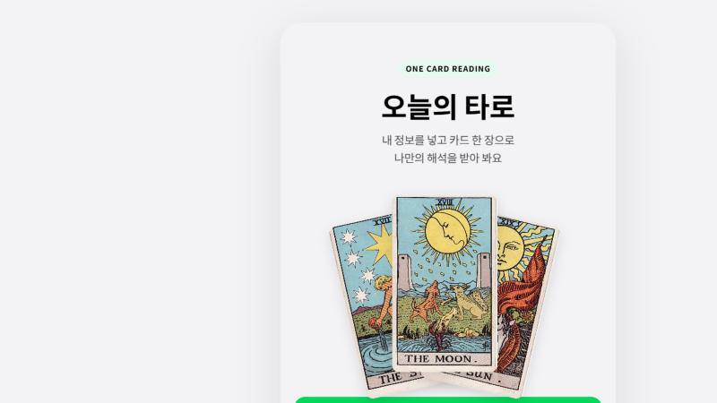
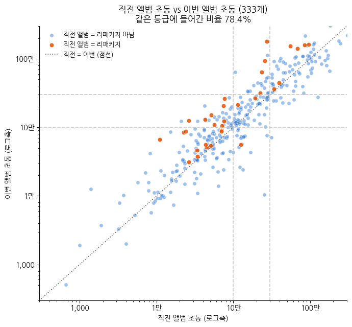

데이터 분석과
예측 모델링.
넓게 퍼진 판매량을 3등급 분류 문제로 정의하고, 후보 모델 7종을 튜닝해 스태킹 앙상블로 묶었습니다. 앞의 연도로 학습하고 뒤의 연도로 평가하는 시계열 검증을 지켰습니다.
PYTHON / PANDAS / SCIKIT-LEARN / GOOGLE COLAB
이원영 / 산업경영공학과 3학년
데이터로 묻고 답하는 산업경영공학도 이원영의 포트폴리오입니다.
언제든 이 화면으로 다시 돌아올 수 있어요.
이원영 / 산업경영공학과 3학년
직접 모은 앨범 433개와 설문 70명의 응답으로 K-pop 컴백 예측 모델을 만들었고, 카드 한 장으로 나만의 해석을 받아 보는 AI 타로카드를 기획해 배포했습니다.
나를 표현하는 한 줄,
파이팅!
ABOUT ME / 소개
산업경영공학과 3학년 이원영입니다. SM · JYP · 스타쉽의 2015~2025년 앨범을 직접 엑셀로 정리하고, 사람들이 다음 앨범을 어떻게 예측하는지 설문으로 물어 예측 모델과 비교했습니다. 이 결과를 R&Dix 2026 전시에서 포스터로 선보였습니다.
1학기에는 카드 한 장으로 나만의 해석을 받아 보는 AI 타로카드를 PRD · 기능명세서 · 유저플로우 · 와이어프레임으로 기획하고 배포했습니다.
WHAT I DO
데이터와 사람, 서비스 사이에서 직접 해 본 일입니다.
넓게 퍼진 판매량을 3등급 분류 문제로 정의하고, 후보 모델 7종을 튜닝해 스태킹 앙상블로 묶었습니다. 앞의 연도로 학습하고 뒤의 연도로 평가하는 시계열 검증을 지켰습니다.
PYTHON / PANDAS / SCIKIT-LEARN / GOOGLE COLAB
70명에게 초동 예측 10문제를 내고, 답한 이유와 실제로 고른 답을 비교했습니다. 이항검정으로 "말한 것과 고른 것이 다르다"는 점을 확인해 비교 기준 모델을 만들었습니다.
네이버 폼 / 이항검정 / MATPLOTLIB
PRD · 기능명세서 · 유저플로우 · 와이어프레임으로 서비스를 정리하고, 개인정보를 저장하지 않는다는 원칙을 화면 안내까지 이어 설계했습니다.
PRD / 와이어프레임 / FIGMA MAKE
SELECTED WORK
직접 기획하고, 만들고, 검증한 작업입니다.
이름 · 생년월일 · 전공과 궁금한 주제를 넣으면 메이저 아르카나 22장 중 한 장을 뽑아 3줄 맞춤 해석을 보여 줍니다. 입력한 정보는 저장하지 않고, 결과는 이미지로 저장하거나 친구에게 공유할 수 있습니다.
사이트 열어 보기 ↗
SM · JYP · 스타쉽의 2015~2025년 앨범 433개로 다음 앨범의 초동 등급과 컴백 시기를 예측했습니다. 설문 70명으로 만든 사람 기준과 비교해 초동은 75.9% → 78.8%, 컴백 시기는 54.3% → 69.2%로 더 많이 맞혔습니다.

CONTACT / 연락처
처음 화면으로 돌아가 볼까요?